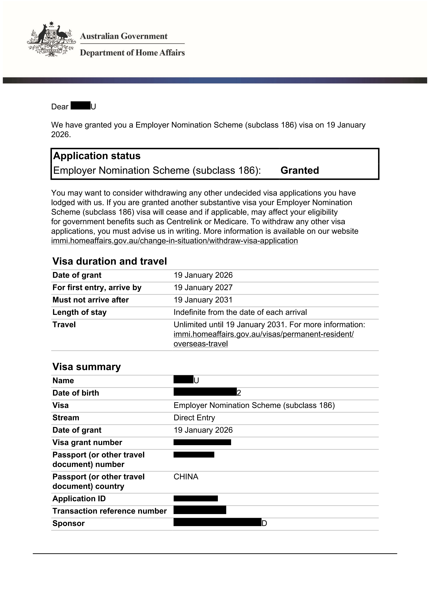
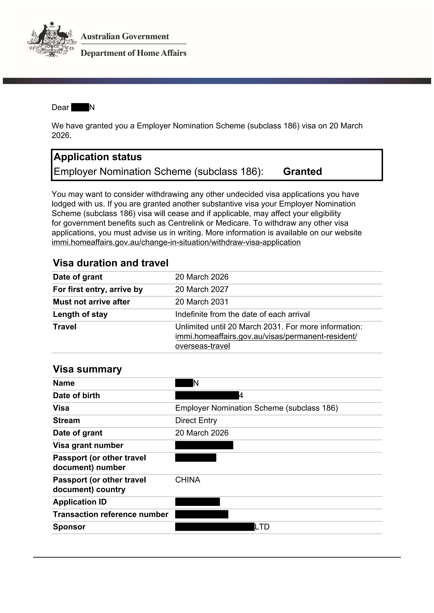
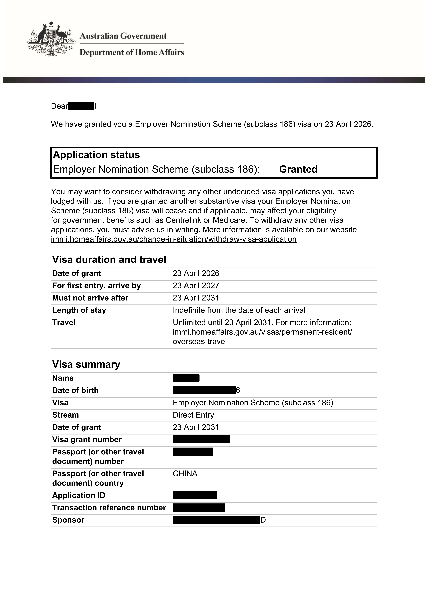

01 · 签证路径
先判断 482 / 186 / Labour Agreement
482 适合已有雇主担保意向，186 偏长期永居规划，Labour Agreement 适合标准路径不完全适配时进一步核对。
查看相关岗位澳洲找工作 · 雇主担保机会导航
面向澳洲求职和雇主担保申请人，聚合签证担保岗位、职业清单、求职网站和路径自测，帮你从职业关键词开始筛选机会。
·求职推荐
01 · 签证路径
482 适合已有雇主担保意向，186 偏长期永居规划，Labour Agreement 适合标准路径不完全适配时进一步核对。
查看相关岗位02 · 求职工具
03 · 避坑指南
·成功案例



·自测工具
联系我们
添加微信，获取按职业、城市、行业整理的雇主担保公司名单，并了解简历优化、求职陪跑和材料准备服务。